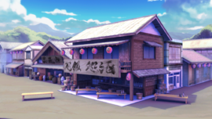

- Welcome to Touhou Wiki!
- Please register to edit. For assistance, check in with our Discord server or IRC channel.
Human Village
Human Village nĩŋɡ̃ẽ̞n no̞ sa̠to̞ | |
|---|---|
|
 A tavern in the Human Village, as seen in Hopeless Masquerade and Antinomy of Common Flowers
| |
| Location |
On one side of the Forest of Magic, Unknown |
| Residents |
|
Appearances | |
| Official Games | |
| |
| Print Works | |
| |
The Human Village (人間の里 Ningen no Sato) is where most of Gensokyo's humans live. Even though some youkai also visit here to shop, this is the safest place in all of Gensokyo to live. Humans from the outside world that stumble into Gensokyo and decide to stay often have no choice but to live here as they would be unable to handle the youkai outside the village. The village itself has a powerful protector in Keine Kamishirasawa, who is capable of "hiding" the history of the village's existence for its protection.
General Information[edit]
When people talk about a "village", the word refers to the Human Village because there is only one in Gensokyo.
Geography and People[edit]
Among the people living at the village are Keine Kamishirasawa and Hieda no Akyuu. The village has an as of yet unnamed leader, a florist, a woodcutter, a teahouse, a tofu shop, youkai exterminators, and more.[1] There's also the Kirisame-ya second-hand shop here which is owned by Marisa's father. Some stores stay open late into the night to cater exclusively to youkai[2]. The village also has a darker side in the form of the Secret History Association.
Most of the furniture in the Scarlet Devil Mansion was made by humans in this village, and Sakuya Izayoi comes to shop often. Yuuka Kazami has come to shop at the flower shop on at least one occasion. Ran Yakumo is a frequent customer of the village tofu shop, and also checks up on the village occasionally for her master Yukari Yakumo. Reisen Udongein Inaba travels to the village to sell medicine, though she is forced to do so in human disguise.[3] It is said that Medicine Melancholy once tried to spread poison across the village. Kogasa Tatara is often sighted in the village, where she is disliked by adults but loved by children (to her dismay).
A number of households possess resident zashiki-warashi, who are adored by humans but secretly act as spies for the other youkai. They were briefly replaced by hobgoblins during the events of Wild and Horned Hermit, who failed to achieve the same level of popularity.
Myouren Temple was constructed near the village after the events of Undefined Fantastic Object.
The Village and Youkai[edit]
Officially, youkai do not meddle in village affairs, and villagers tend to be uncomfortable with youkai walking the streets unless they have good reason to be there. Below the surface there are many youkai who visit the village in disguise, or compete to gain influence over it (Mamizou Futatsuiwa being a notable example), but anything which would actually cause the villagers trouble is out of bounds. Some disguised youkai, like Sekibanki, actually live in the village. Youkai seek to avoid anything which would cause Gensokyo's human population to rally around a strong leader and directly challenge their authority over Gensokyo.[4]
Sub-Locations[edit]
Some notable locations within the Human Village:
Dragon Statue[edit]
A statue of the Dragon God serves as one of the village's more notable landmarks. Built by kappa, its eyes can predict the weather by changing colour, and are said to turn red before an incident.
Hieda House[edit]
Hieda no Akyuu lives here, recording everything that she has seen in her life. Her family appears to be one of the wealthiest in the village, with several house-servants[5] and a sizable vegetable garden[6].
Kappa Warehouse[edit]
An abandoned building at the edge of the village was once used by the kappa for storage while their normal warehouse was frozen over.[7]
Kirisame-ya Second-Hand Shop[edit]
Marisa's father is the owner of this shop. Rinnosuke Morichika was his former apprentice here, but nothing much is known here beyond that it does not deal in magic items.[8]
Roadside Shrines[edit]
The village possesses a hokora dedicated to the Shinto god Inari, which an Unnamed Evil Dragon claims to have constructed long ago.[9] During the events of Forbidden Scrollery chapter 23, the Moriya Shrine erects a number of its own hokora around the outskirts of the village, encouraging villagers to leave offerings in order to ward off a recent series of snake attacks.
School[edit]
There is a Terakoya somewhere in the village, where Keine works as a history teacher. Planning for its construction began in the 117th Season[10]. Known students include the village chief's son, the florist's daughter, and a disguised Kitsune[11].
Suzunaan[edit]
- Main article: Suzunaan
The book renting shop where Kosuzu Motoori works.
The Human Village's Appearances[edit]
PC-98[edit]
- Highly Responsive to Prayers
The Human Village was first referenced in the PC-98 game Highly Responsive to Prayers, where youkai and demons were after the village to destroy it. In the game, it had the kanji "人里" (Hitozato) and was set in the Eastern Country. There hasn't been any evidence however that the Human Village in the PC-98 and Windows era are the same location.
Windows[edit]
- Imperishable Night
After many years since it was first mentioned, the Human Village became the setting for stage 3 of Imperishable Night. Fearing that youkai would take advantage of the endless night to launch an attack, Keine Kamishirasawa hid away the village's history, disguising it as a patch of uninhabited wilderness.
- Hopeless Masquerade
The village appears as a stage location in Hopeless Masquerade. The events started off by Hata no Kokoro losing control of her component masks, causing her to leech emotions from the Human Village. In response, Gensokyo's religious leaders set out to restore the villagers' hope through spirituality and exciting battles. Two playable stages are set in the village: a daytime stage featuring a variety of human and youkai spectators, and a night stage used for the final battle against Kokoro.
- Urban Legend in Limbo
The village returns as a stage location associated with Hata no Kokoro. Only the night version from the previous game is shown.
- Antinomy of Common Flowers
The village returns once again as a stage location associated with Hata no Kokoro. Both the day and night versions from Hopeless Masquerade are shown.
Gallery[edit]
Stage 3 of Imperishable Night, where the village supposed to be
Stage 3 of Imperishable Night later on
The Human Village at night as seen in Urban Legend in Limbo and Antinomy of Common Flowers
The Hieda Mansion as seen in Memorizable Gensokyo
The Hieda Mansion garden in Memorizable Gensokyo
A view of the village from Visionary Fairies in Shrine.
Fandom[edit]
- Youki Konpaku has often been depicted to live here.
References[edit]
- ↑ 東方求聞史紀 ～ Perfect Memento in Strict Sense Eyewitness reports: Keine Kamishirasawa, Luna Child, Ran Yakumo, Human village
- ↑ Perfect Memento in Strict Sense: Human Village "many stores are kept open late at night, but that is when they are for the exclusive use of youkai"
- ↑ Forbidden Scrollery chapter 21
- ↑ Forbidden Scrollery chapter 32
- ↑ Memorizable Gensokyo
- ↑ Forbidden Scrollery chapter 13
- ↑ Forbidden Scrollery chapters 14-15
- ↑ Perfect Memento in Strict Sense: Marisa Kirisame "As this is a private matter the details are unclear, but it may be related to the fact that the Kirisame family doesn't deal in magical items."
- ↑ Forbidden Scrollery chapters 8-9
- ↑ Bohemian Archive in Japanese Red: Keine The 117th Season, Nagatsuki 2. "If dangerous ideas are formed from this society because the humans have not passed on their history to their descendants, she said she has considered opening a history school."
- ↑ Forbidden Scrollery Chapters 18-19